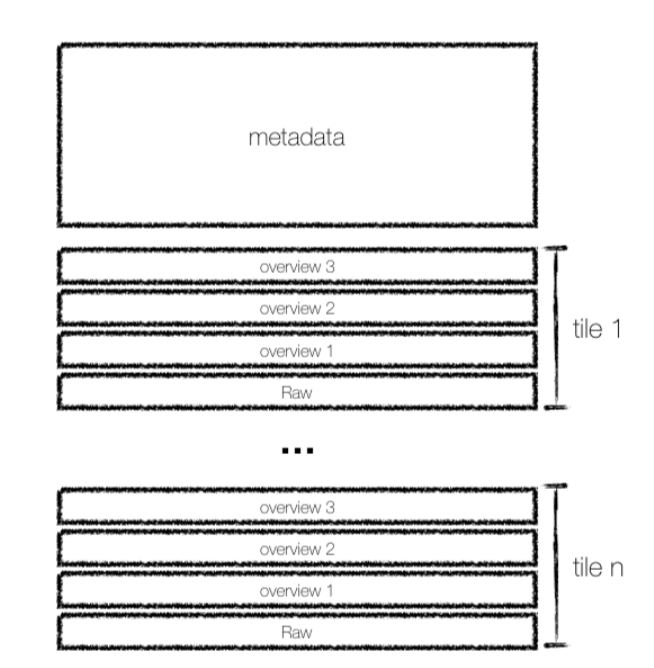
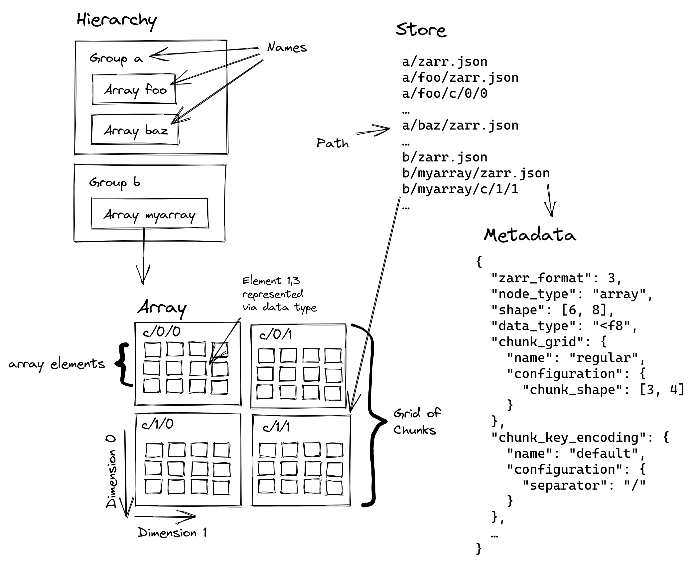

About Cloud Optimised Formats
Why do we need to cloud-optimise geospatial data formats?
The volume of EO data has grown exponentially in recent years. The Copernicus programme alone generates ~16TB daily from the Sentinel missions. Traditional file formats, like SAFE (where each file can be hundreds of megabytes), are optimised for efficient archiving and distributing data. This means that we often download the data from an entire overpass, even if we only need to access a small part of it, for example, if we want to do an analysis of the area of a single city over a decade.
With growing data volumes, this becomes a challenge. To picture the different nature of challenges we come across, let us compare a traditional local workflow with a cloud-based workflow:
Traditional local workflow: When working locally, we download much more data than we need, and we are constrained by the compute and storage capacity of the local system. However, an advantage working locally is that data and compute are close together, meaning that there is not much delay in accessing the data.
Cloud-based workflow: Cloud environments overcome limitations local workflows have. A cloud environment offers limitless storage and compute capacity. On the contrary, data storage, compute, and you the destination are far apart. There is an additional time for data to travel between the storage location, processing resources and us. This time is referred to as data latency.
Data latency refers to the time it takes for data to be transmitted or processed from cloud storage to your computer. In local workflows, data latency is minimal, whereas in cloud-based workflows, data latency needs to be optimised.
Local workflows are similar to placing an order at the nearby pizzeria. It is quick since the ‘data’ (pizza) is easily accessible, but we can only choose from what they have on hand and their menu. The local alternatives limit our options. On the other hand, cloud-based workflow offers almost limitless choices and access to a wide range of speciality ingredients or distinctive styles.
This makes it similar to being able to order a pizza from any pizzeria on the globe. While we might have more options to choose from, the time between order and delivery can become a challenge.
The overall goal with cloud-based workflows is to minimise data latency as much as possible. This is why traditional data formats need to be cloud-optimised.
Characteristics of cloud-optimised formats
Cloud-optimised formats are optimised to minimise data latency. By allowing for an efficient retrieval of smaller, specific chunks of information rather than downloading an entire file. Accessing a smaller data subset also reduces the costs associated with data transfer and data processing.
Cloud-optimised geospatial data formats have the following characteristics:
- Data is accessible over an HTTP protocol.
- Read-Oriented, as it supports partial and parallel reads.
- Data is organised in internal groupings (such as chunks, tiles, shards) for efficient subsetting, distributed processing and data access in memory.
- Metadata can be accessed in one read.
When accessing data over the internet (e.g., cloud storage), latency is high compared to local storage, so it is preferable to fetch lots of data in fewer reads.
Understanding N-dimensional Arrays
Earth observation data often consists of multiple dimensions - think of a satellite image series that has spatial dimensions (latitude, longitude), spectral bands, and time. This multi-dimensional nature requires specialized data structures and tools.
The xarray Data Model
xarray provides a powerful data model for working with labeled multi-dimensional arrays. It introduces:
- Dimensions: Named axes (e.g., latitude, longitude, time)
- Coordinates: Labels for points along dimensions
- Variables: N-dimensional arrays with corresponding dimensions
- Attributes: Metadata about the arrays

Cloud-Optimised Geospatial Data Formats
For satellite data, there are two main categories of cloud-optimised formats: 1. Raster Formats: Optimized for 2D image data (like Cloud-Optimised GeoTIFFs) 2. Multi-dimensional Array Formats: Designed for complex, n-dimensional data structures
Cloud-optimised GeoTIFF (COG)
COGs have widely been used as cloud-native format for satellite imagery and improve the standard GeoTIFF format by: - Organising data into tiles: Dividing the data into smaller, manageable squares (like 512x512 pixels). - Including lower-resolution previews: Having pre-generated, less detailed versions of the data. This allows for fast and efficient data visualisations.
A key feature of COGs is the Internal File Directory (IFD), which acts like an internal index. This allows for retrieving only the parts of the data needed using simple web requests. For example, it is possible to access just the tiles covering Paris from a large Sentinel-2 image of Europe.

Multi-dimensional Array Storage with Zarr
While xarray provides the data model for working with n-dimensional arrays, Zarr provides the storage format. Zarr is designed specifically for storing and accessing large n-dimensional arrays in the cloud by:
- Chunking: Breaking large arrays into smaller pieces that can be accessed independently
- Compression: Each chunk can be compressed individually for efficient storage
- Hierarchical Organization: Arrays are organized in groups, similar to folders in a filesystem
- Cloud-Native Access: Optimized for reading partial data over HTTP
- Parallel I/O: Multiple chunks can be read or written simultaneously
- Self-Description: Rich metadata is stored alongside the data using JSON
This makes Zarr particularly well-suited for cloud-based Earth observation data, where datasets often combine multiple dimensions like space, time, and spectral bands.

When to use COGs versus Zarr?
The table below compares some features of COG and Zarr:
| Feature | Zarr | COG |
|---|---|---|
| Structure | Multi-file chunks | Single file |
| Access | Parallel | Sequential |
| Compression | Differently per-chunk | Whole-file |
| Scales | Multi-scale in single file | Separate, pre-generated lower-resolution files |
Based on the structure and capabilities for each format, COGs are used when:
- you work with two-dimensional raster data (like satelliteimages or elevation models)
- you need to easily visualise or access specific geographic areas without loading the entire dataset.
- interoperability with existing GIS software is important, as COG is a widely adopted standard.
On the other hand, Zarr is more often used when:
- you deal with large, multi-dimensional datasets that might be updated or modified.
- you performing complex analyses that involve accessing different parts of the data in parallel.
- an efficient handling of different resolutions or variables within a single dataset is required.
Zarr vs COG: Want to learn more about the differences and similarities of COG and Zarr? Then we recommend the following blogpost by Julia Signell and Jarrett Keifer from Element84 where they discuss “Is Zarr the new COG?”
What’s next?
Now that we have an idea of the available cloud-optimised formats for satellite imagery and what cloud-optimised means, we will explore the EOPF data products that will become available as part of the EOPF Zarr Sample Service.